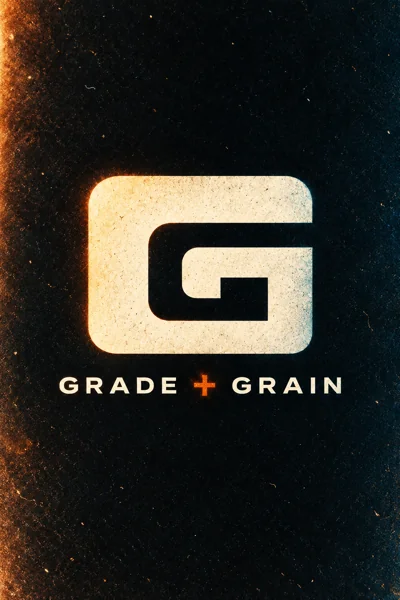
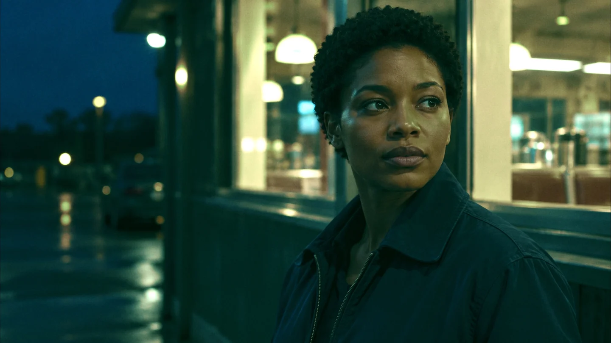
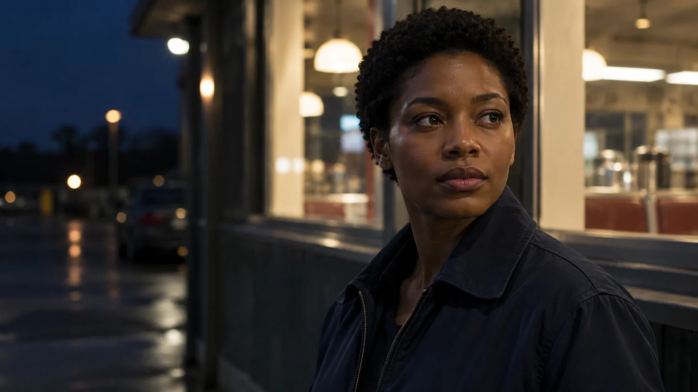
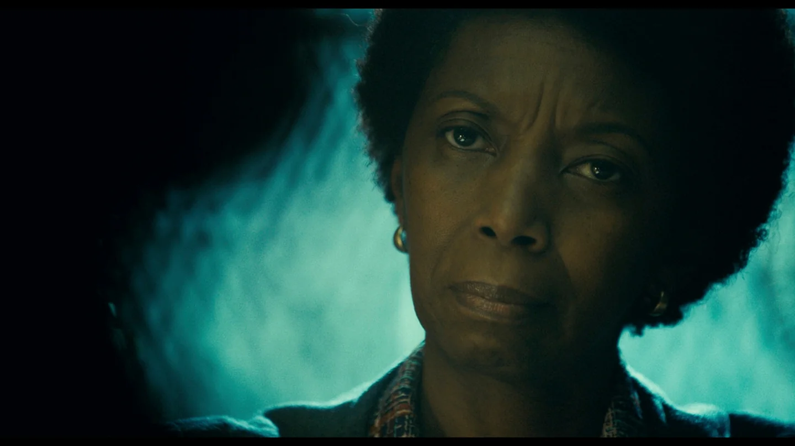
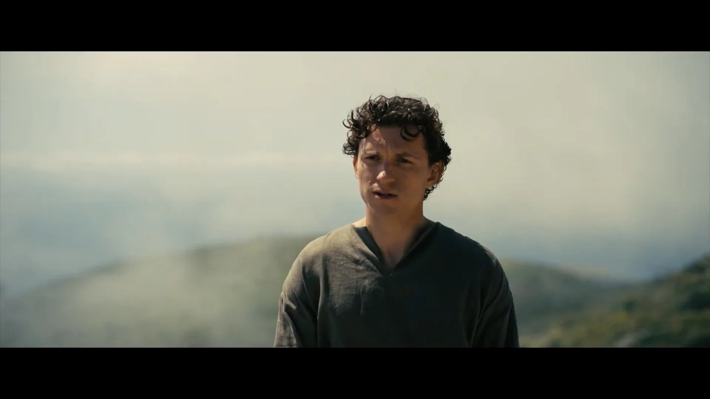
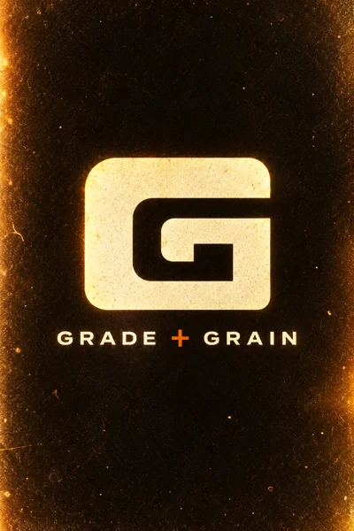
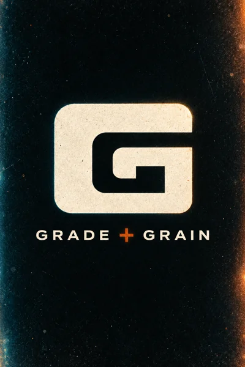
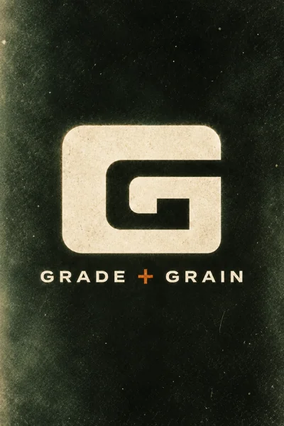
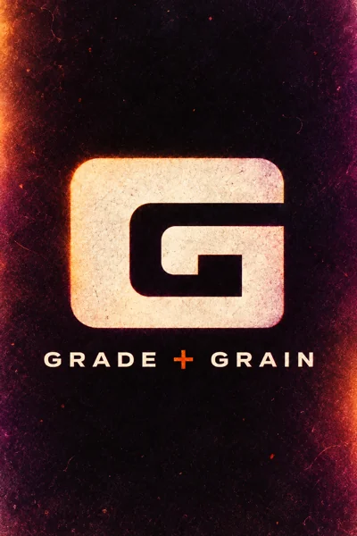

KODAK VISION3 / 500T


OriginalAI Look MatchActual Grade + Grain exports. Open a look to compare it with the original.
Start with a reference.
Finish with your signature.

No new windows, no roundtrips. GRADE + GRAIN runs natively as an OFX node — full reference matching, waveform-aware analysis and film-stock emulation, right inside your color page.
Drag to compare. Use the arrow keys when the slider is selected. Color Match applied in DaVinci Resolve.
From the original image to the reference-inspired grade, then Kodak Vision grain, a film gate and warm gate halation. Each finished frame was exported from Grade + Grain in Resolve.
 Original
Color Match
Original
Color Match
Drag to compare. Use the arrow keys when the slider is selected. Color Match applied in DaVinci Resolve.

Follow the original through color matching, Fuji Eterna grain, a 65mm 5-perf gate and gate halation. Each stage was exported from Grade + Grain in Resolve.
Find your texture.
Make it part of your signature.





Reference matching, grading controls and film texture, right where you work. Chroma Pulp™ puts exposure, highlight rolloff and shadow control in your hands.
Join the beta ↗
Monthly, quarterly or annual billing. All prices in USD.
Billed every month.
One month at a time.
Join the BetaBilled every 3 months.
Equivalent to $26.67 per month.
Save $10 every quarter compared with monthly billing.
Join the BetaBilled every year.
Equivalent to $25 per month.
Save $60 every year compared with monthly billing.
Join the BetaJoin the beta tester list for testing invitations and updates.
Enter your email to request a beta invitation and receive testing updates.